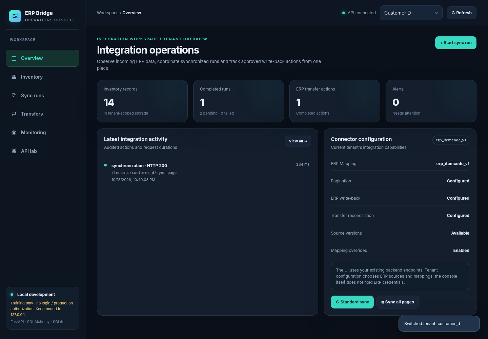

Integration without data chaos.
ERP Bridge explores how different ERP schemas can connect through a canonical model with tenant-specific mappings, recoverable synchronization, controlled write-back, and operational visibility.
What the private prototype explores
The features below are implemented in the original local project; the interactive page farther down is a separate, synthetic illustration.
Canonical mapping
Customer-specific schema mappings and explicit field overrides.
Pagination and checkpoints
Tracked synchronization across individually committed pages.
Version-aware updates
Conditional writes protect against stale source revisions.
Controlled write-back
Approval state, idempotency identifiers and reconciliation flow.
Observability
Request events, timing, status summaries and alert indicators.
Tenant-scoped storage
Records keyed by tenant, product and warehouse—not authorization.
Try the workflow
Switch tenants and simulate a sync or failed upstream call. Every number shown below is fictional and kept in your browser; no backend request is sent.
Canonical inventory preview
| SKU | Product | Warehouse | On hand |
|---|
Integration activity
This simulation is a standalone frontend written for the portfolio. It does not persist, authorize or actually synchronize ERP data.
Real operations console
This screenshot is from the original FastAPI-backed local application, using a mock ERP and a local SQLite database. The backend and original console code are not included in the public repository.

Screenshot from the original local prototype; synthetic customer information. Screenshot is evidence of UI development, not a publicly connected service.
What happens when an ERP times out?
For side-effecting transfers, the private prototype records an uncertain outcome and exposes an ERP lookup path instead of blindly sending the same transfer again. The mock uses an idempotency identifier; durable guarantees depend on the receiving ERP implementation.
Public proof, private engine.
Architecture and simplified Python tests are published for review. The full FastAPI code, configuration handling, write-back implementation and persistence modules remain private. No authorization or production readiness is claimed.